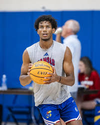
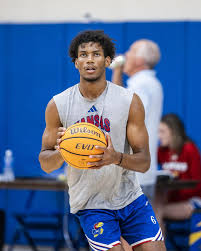
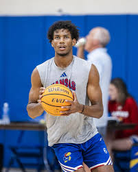

Samis Calderon, ala que jogava pelo Cold Hearts na Overtime Elite agora vai jogar pela universidade de Kansas em 2025.
Kansas é uma das melhores universidades dos EUA atualmente, com um time de basquete com grandes estrelas, e agora vão contar com o brasileiro.

Top 5 jogadores da NBA em 2025
Publicado em 12 de outubro de 2025
A NBA continua revelando talentos incríveis. Nomes como Luka Dončić, Giannis Antetokounmpo e Jayson Tatum estão entre os maiores destaques da temporada.
O equilíbrio entre técnica, força física e visão de jogo tem elevado o nível da liga, proporcionando duelos cada vez mais intensos e estratégicos.
Como melhorar o arremesso de três pontos
Publicado em 15 de outubro de 2025
Treinar o arremesso de três pontos exige paciência e repetição. O segredo está na postura, no equilíbrio e no acompanhamento do movimento após o arremesso.
Uma boa dica é manter uma rotina diária de prática e analisar vídeos dos melhores arremessadores, como Stephen Curry, para aperfeiçoar a técnica.
 
